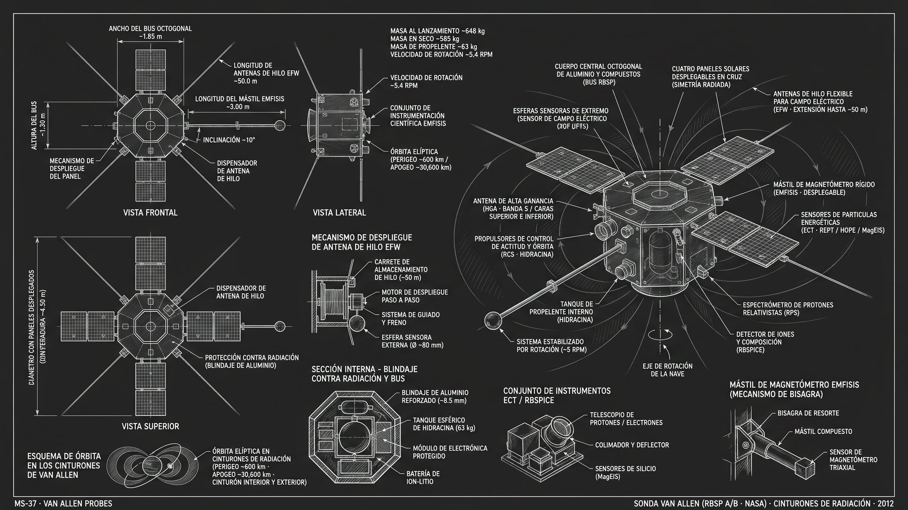

Van Allen Probes (RBSP A y B)

Dos naves gemelas que descubrieron un tercer cinturón de radiación alrededor de la Tierra. Iban para dos años y aguantaron casi siete; la última se apagó en 2019.
Apagado de la nave B el 19 de julio de 2019 y de la nave A el 18 de octubre de 2019, tras casi siete años de datos; la A reentró el 11 de marzo de 2026 sobre el Pacífico oriental. Personas: Nelofar Mosavi, David Sibeck, Sasha Ukhorskiy
Lo que hizo
- Mi encargo — Vigilar los cinturones de radiación de la Tierra, la región donde se acumulan partículas cargadas capaces de dañar satélites y astronautas. Nos lanzaron juntas el 30 de agosto de 2012.
- El tercer cinturón — Días después de llegar ya habíamos visto un tercer cinturón de radiación transitorio, que se forma cuando la actividad solar es intensa y luego se deshace.
- El regreso — En febrero de 2019 hicimos las maniobras finales de deorbitación para no dejar chatarra espacial en órbita. La nave A reentró el 11 de marzo de 2026, antes de lo previsto por el máximo solar.
Modelo 3D, chat y cómic, en tres idiomas
Fuentes
- science.nasa.gov/mission/van-allen-probes/
- www.nasa.gov/solar-system/ten-highlights-from-nasas-van-allen-probes-mission/
- www.nasa.gov/missions/van-allen-probes/nasa-van-allen-probe-a-to-re-enter-atmosphere/
Ver el índice completo · Proyecto del NASA Space Apps Challenge 2026. Contenido con fuentes citadas.